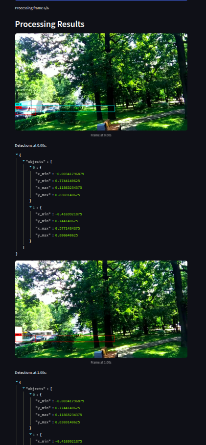
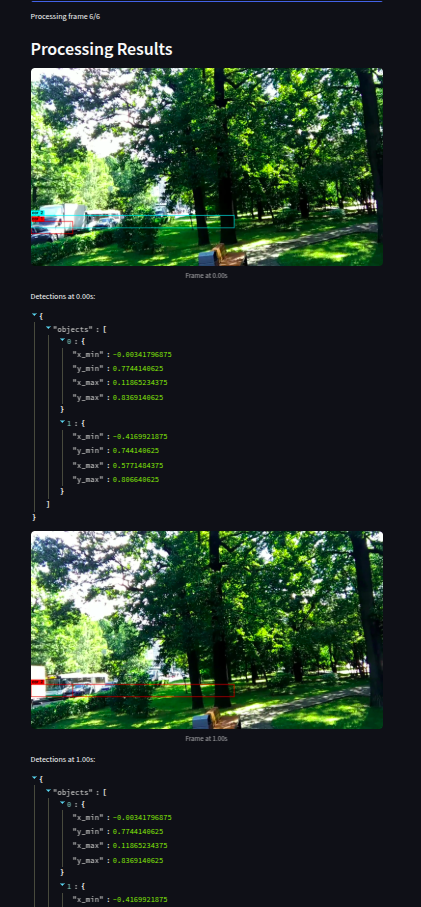

A Django Web App with AI-Powered Chatbot, Image Generation, and Personalized Indexing
Introducing Awe app, a next-generation web application powered by Django.
Seamless User Experience
- Personalized Workspace: Each user enjoys a dedicated index for storing their creative endeavors.
- Intuitive Chat Interface: Engage with our intelligent chatbot in a natural, conversational way.
- Multiple Upload Options: Upload PDFs, CSV files, or plain text to enrich your index.
Cutting-edge AI Technologies
- Custom User Index Storage: Efficiently store and manage your project-related data.
- Faiss Database Integration: Leverage Faiss for high-performance information retrieval.
- Semantic Prompt Generation: Craft image prompts that resonate with underlying meaning.
- Conversational Context: Chatbot considers history for tailored responses.
Unlock Endless Possibilities
- Generate captivating visuals based on your ideas.
- Streamline creative workflow with intelligent suggestions.
- Discover new connections and explore innovative designs.
Skills Gained
- Artificial Intelligence (AI): Applied AI principles to create an intelligent system.
- Machine Learning (ML): Utilized ML techniques to improve the system.
- Large Language Model (LLM): Integrated an LLM for understanding user input.
- Faiss Database: Effective implementation for fast retrieval.


 
